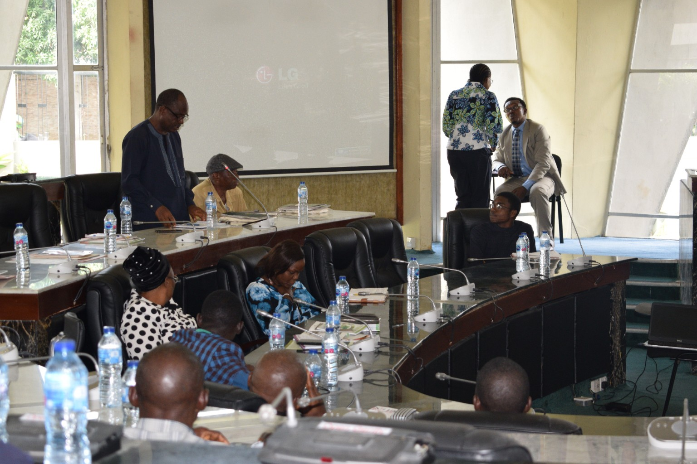
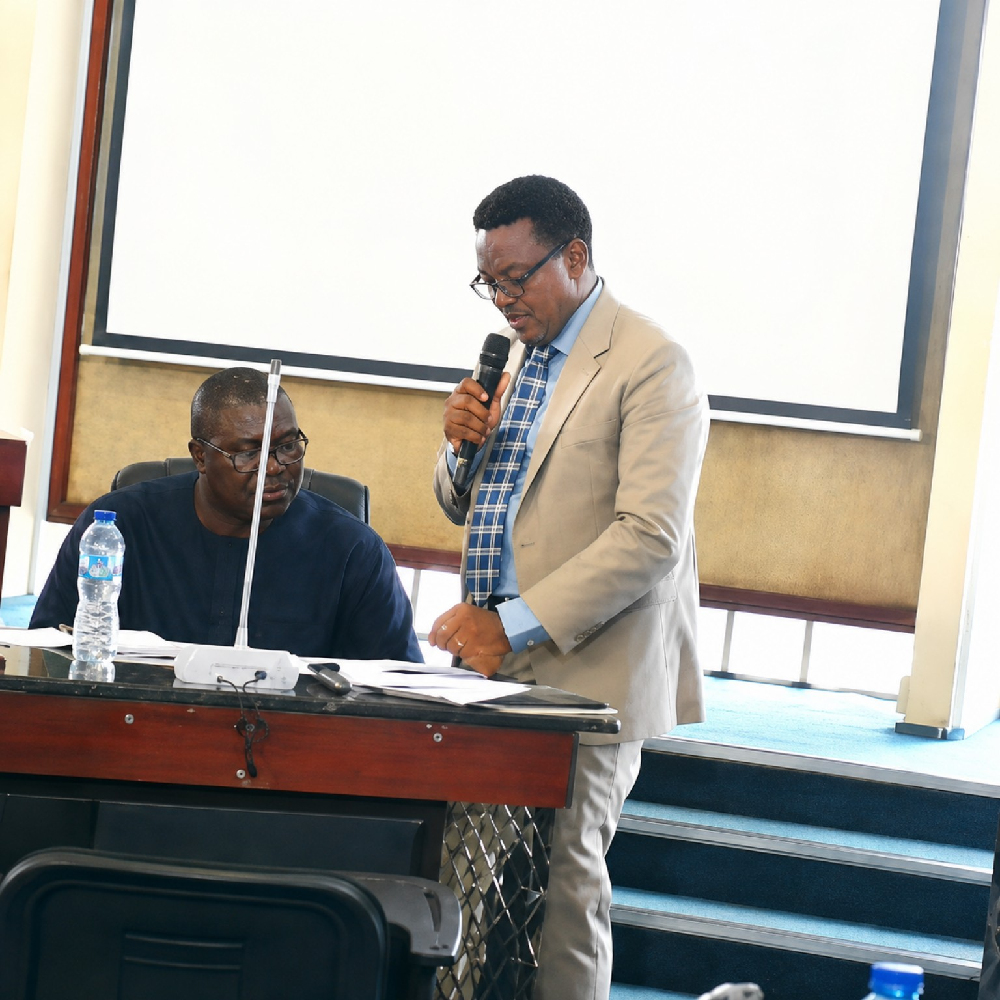
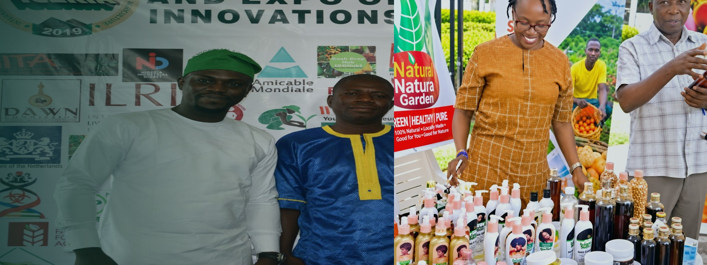

Research
Evidence and solutions for agriculture


Research. Innovation. Partnerships. Impact.
A continuing platform connecting agricultural research, innovation, policy, enterprise, investment, knowledge exchange and practical impact — with each edition adding to the ICERIA journey.
Evidence and solutions for agriculture
From ideas to practical application
Stronger collaboration for greater impact
Opportunities for scalable solutions
Sharing, learning and resources
Sustainable food systems and inclusive growth
From the maiden edition to the current edition, ICERIA continues to bring people, ideas and opportunities together to advance sustainable food systems in Africa and beyond.

Explore 2019 →
Dr. Kanayo Nwanze, former President of the International Fund for Agricultural Development (IFAD), was the keynote speaker at the maiden edition in 2019. The ICERIA record also includes participation by international development, research, policy and private-sector institutions.
View the ICERIA archive →Mr. Bryan Udoh — Agriculture Policy Officer, Embassy of the Kingdom of the Netherlands — participated at ICERIA 2019 as presenter and panelist. The 2020 visual record also features Bram Wits, Agricultural Counselor for West Africa.
Historical ICERIA documentation records IITA participants including Katherine Lopez, Yinka Fasogbon, Osunde Timilehin, Victor Saleh, Oyeyemi Azeez, Paul Emmanuel, Oiwoja Odihi and Tunde Sulaiman.
News, announcements and stories from ICERIA and its partners — including coverage from previous editions.
Pre-conference coverage from 2019.
Read in News & Media →Coverage of the 2019 conference build-up.
Read in News & Media →Reporting on the 2019 conference dialogue.
Read in News & Media →Institutional coverage of ICERIA 2019.
Read in News & Media →Participation, partnership, exhibition, sponsorship and media enquiries.